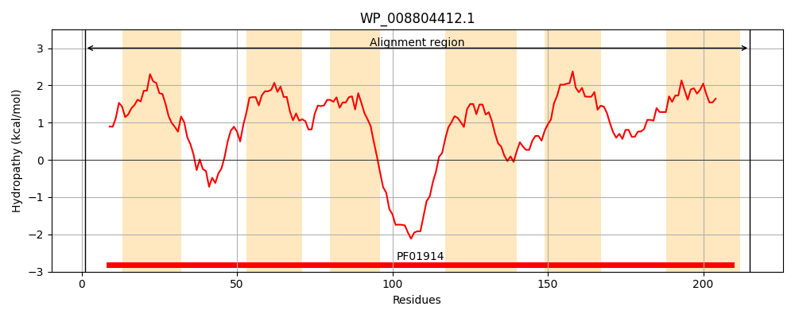
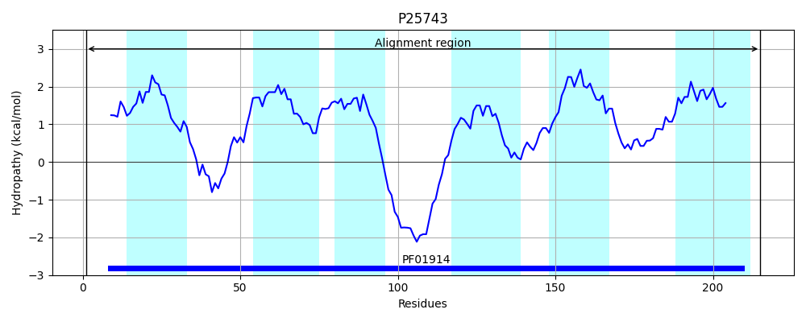
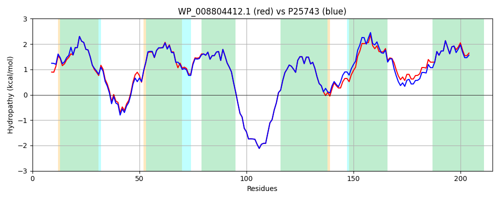

Hit Accession: P25743
Hit TCID: 2.A.95.1.7
Hit Description: gnl|BL_ORD_ID|9564 gnl|TC-DB|P25743|2.A.95.1.7 UPF0056 membrane protein YhcE OS=Escherichia coli (strain K12) GN=ychE PE=3 SV=2
Mach Len: 215
e:0.000000
Query TMS Count : 6
Hit TMS Count: 6
TMS-Overlap Score: 6.050000
Predicted Substrates:CHEBI:2642;alpha-amino acid
BLAST Alignment:
Score: 958 , Bit scores: 373 bits, E-value: 1.2e-133, Alignment length: 215, Percentage identity: 89
Query: 1 MTQPLFDFATYFKFFIGLFALVNPVGIIPVFISMTSYQPAAVRNKTNLTANLSVAIILLTSLFLGDGILQIFGISIDSFRIAGGILVVTIAMSMISGKLGEDKQNKQEKSETAVRESIGVVPLALPLMAGPGAISSTIVWGTRYHSWVHLVGFSLAIAVFALCCWGIFRMAPWLVRLLGQTGINVITRIMGLLLMALGIEFIVTGIKALFPGLLN 215
M Q FDF YFKFFIGLFALVNPVGIIPVFISMTSYQ AA RNKTNLTANLSVAIIL SLFLGD ILQ+FGISIDSFRIAGGILVVTIAMSMISGKLGEDKQNKQEKSETAVRESIGVVPLALPLMAGPGAISSTIVWGTRYHS +L GF +AIA+FALCCWG+FRMAPWLVR+L QTGINVITRIMGLLLMALGIEFIVTGIK +FPGLLN
Sbjct: 1 MIQTFFDFPVYFKFFIGLFALVNPVGIIPVFISMTSYQTAAARNKTNLTANLSVAIILWISLFLGDTILQLFGISIDSFRIAGGILVVTIAMSMISGKLGEDKQNKQEKSETAVRESIGVVPLALPLMAGPGAISSTIVWGTRYHSISYLFGFFVAIALFALCCWGLFRMAPWLVRVLRQTGINVITRIMGLLLMALGIEFIVTGIKGIFPGLLN 215 | Protein Hydropathy Plots: |
|---|
|  |  |
Pairwise Alignment-Hydropathy Plot:
|
|---|
|  |